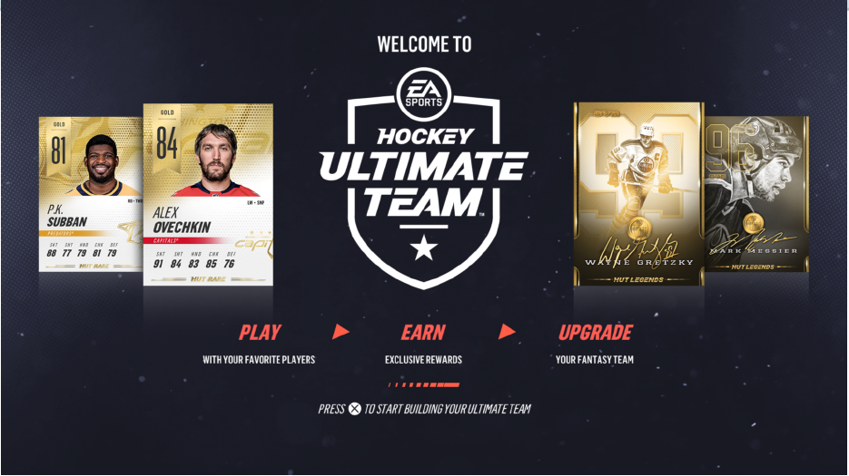
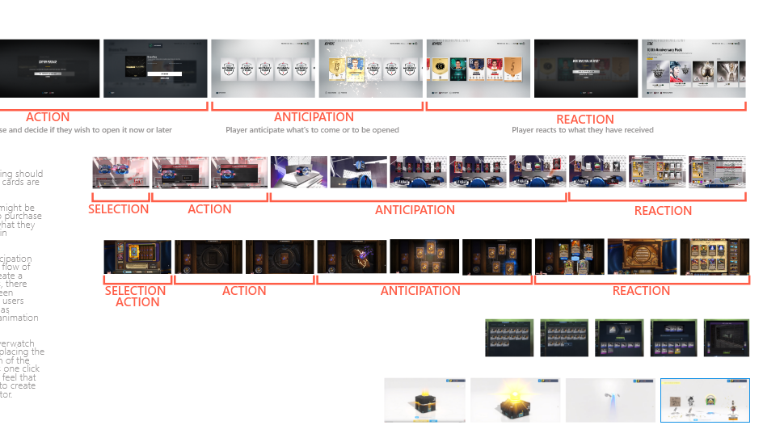
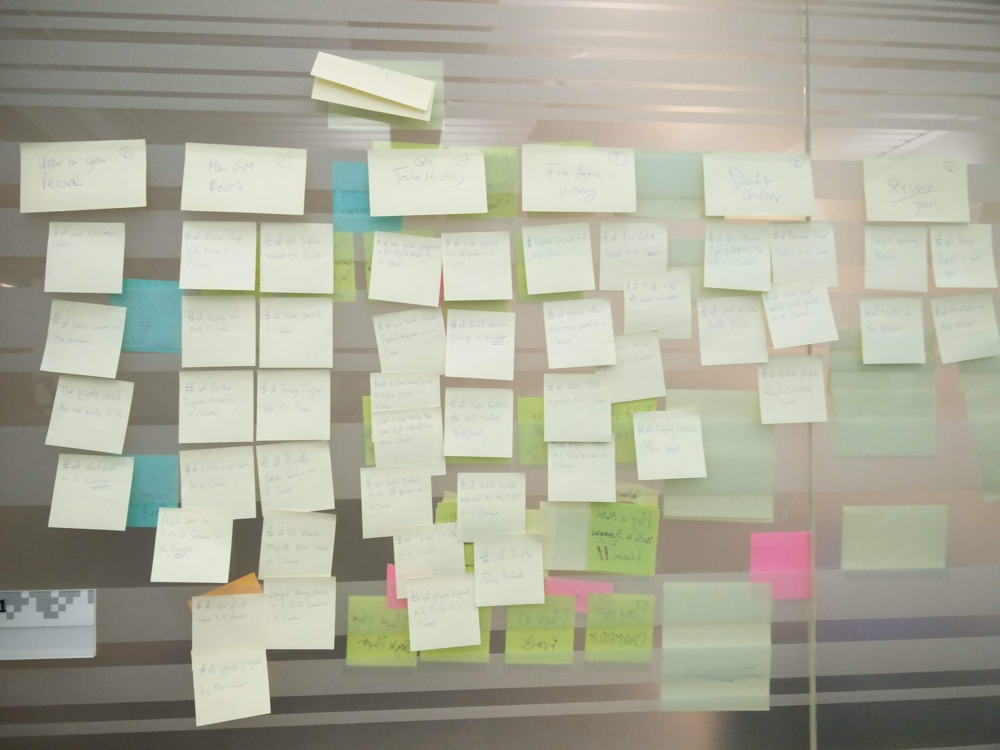
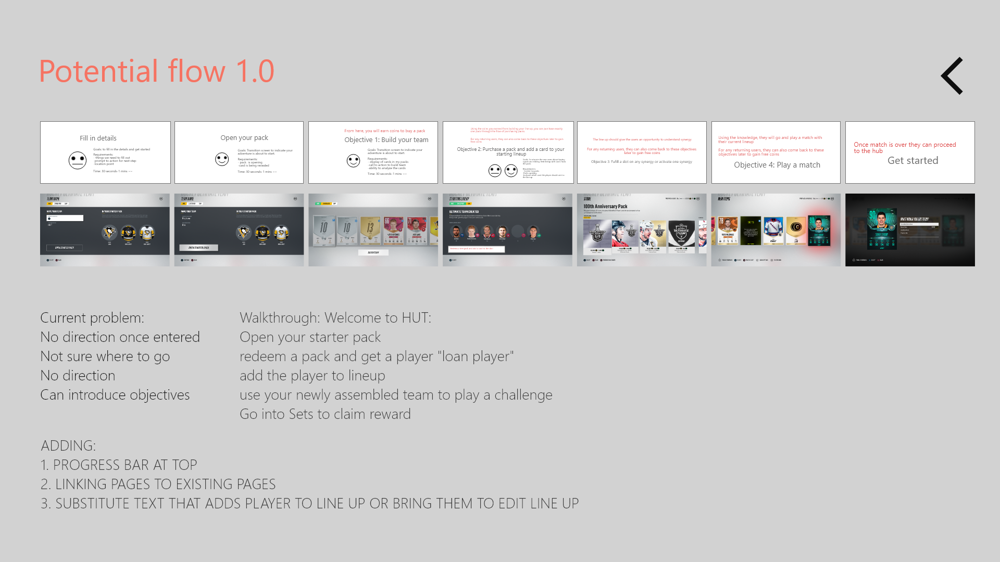
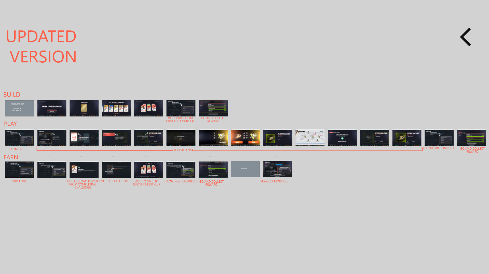
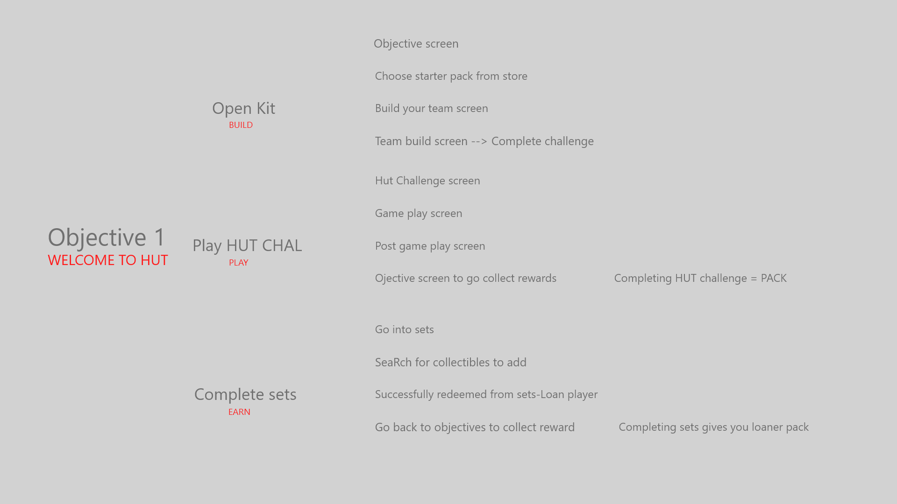
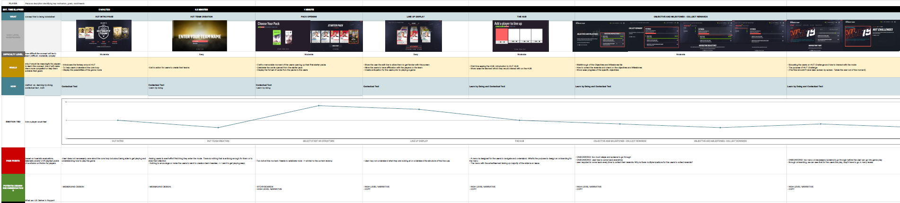

NHL19 HUT Onboarding
As of 2016, there are about half a billion (531,901) active users on HUT (Hockey Ultimate Team) which makes it the most played game mode for EA’s NHL title. With that being said, the game in general has recently seen a decline in active users and as such, there was a request to dive deeper in order to understand users behaviours and find opportunities to gain new users. In previous research, we’ve spent the time in identifying the primary core game flow of the users which emcompasses PLAY, EARN, and UPGRADE. One area that was flagged as an issue was the lack of onboarding for the game mode.
**To comply with my non-disclosure agreement, I have omitted confidential information. All information in this report reflects on my own work and not necessarily Electronic Arts and NHL.**
Though partnering with the user research team (UXR), we’ve consolidated the data set and identified that one of the particular issue that users encountered was the lack of directions after they opened the packs and assembled the team. We decided to utilize the core loop of PLAY, EARN, and UPGRADE to create a cost effective way of a curated initial experience for new users coming into HUT with the intention of making key concepts easy to digest and rewarding experience.
How might we educate new users of HUT’s core loop in a cost effective way?
The flow new should provide users with clarity once they entered the main hub but a new feature, the objective feature that is also being part of this production would be required to be nested within the main hub. Utilizing the objective feature, we can help guide the users through an educational experience by allowing them the options to play and learn through the objectives.
Part of the research and understanding phase, we dove deep into understanding what makes a great onboarding experience by comparing games with similar modes as well as other card games apps on the market. First and foremost, we took a look at how FIFA handles their onboarding for their ultimate team.

We’ve identified that FIFA utilized the objectives as a mean to introduce the game to the users. The first technical problem that we’ve encountered stems from how the game is currently structured and to create an objective screen prior to entering the main hub would require more development effort that would ultimately result in…..We also compared multiple of card game apps and games such as Magic the Gathering, Pokemon, Yugioh, and Hearth Stone in order to understand what are the necessary tools required to successfully onboard a player to build a complete deck or team to compete while having fun.
Then we took a look at other successful apps outside of the gaming world such as Netflix, Uber, Airbnb, and many more to understand how simple onboarding or creating a digestible flow that only momentary overlays the screen to give user insights about the specific feature. Based on our findings, we decided to further explore the concept of utilizing overlays.
As one of the UX designer on the NHL team which consists of over 300 employees, my goal was to work closely with various stakeholders ranging from the creative director, to multiple producers, game designers, engineers, and interface designers. While consolidating the findings we’ve gathered from our research phase, stakeholders from creative directors and producers all believes that the ultimate solution would be to create a new objective screen for the onboarding sequence. With that being said, there are tech limitations and lack of human resources that restricts the development of this particular version. As this year of development also faced some issues, stakeholders decided to push forward with the overlay version of the onboarding sequence that essentially gives the users a breakdown of the core loop and have them play a match to obtain a special card.
The first step of the of the sketch and analysis phase encompasses a lot of mapping out what are the specific screens required to educate the users for the core loop. As I began to layout the screens at a high level and mapping out the interaction of the flow, I’ve quickly realized that this methodology of onboarding would take far too long (over 22 mins to be exact). With that, I’ve backtracked to look at the time frame of onboarding for other games (FIFA, Hearth Stone, Magic) concluding the longest of any onboarding experiences was only at 13-15 mins. I’ve decided the best way to help stakeholders to understand the issue was to use the screens and map out the flow so they can “click” through the game. Upon doing so, they also agree that there are currently too many screens.
Discuss and DesignWe backtracked in order to identify the priorities of what is being requested and what is the ultimate goal (to help retain and gain new users). With that being defined, we removed majority of the features we need to educate the users and kept the focus on the core loop which encompasses 3 primary parts: HUT Challenge (PLAY), Sets and new card (EARN), Edit Lines (UPGRADE).
Implementation
As developers began their implementation, we came to realize that there was another technical issue primarily dealing with how users interact and navigate with the current system. We identified that the current build’s button control are inconsistent throughout the mode which would potentially lead to a cognitive dissonance as every screen would require the users to identify all the button callout prior to following through their action. We’ve flagged this issue but as it encompasses a larger scale heuristic evaluations, we decided to implement with what we currently have so UXR can test and identify issues aside from the inconsistency of the buttons.
As we passed our prototype(s) and builds to UXR for user testing, we began iterating and testing based on the feedback that was given to us. Ultimately, after a month of intensive iteration and testing, we’ve concluded at at the current new state, the users were able to be successfully onboarded with over 90% of the users being able to successfully move forward and continue the core loop after the onboarding is complete. Through conducting the tests, we have gathered enough data to support that just onboarding isn’t enough to retain and attract new users. The mode itself would require further audit in order to investigate some of the top issues that could be potentially hindering users th stay in the mode.
In an effort to audit the mode to identify the top issues, we’ve identified that at its current state, HUT encompasses many fundamental issues that burden users from becoming efficient with the game mode. Here is a summary break down that was conducted by our team in order to identify some of the issues.
For more information about the application please feel free to email me at lukpeter82@gmail.com.